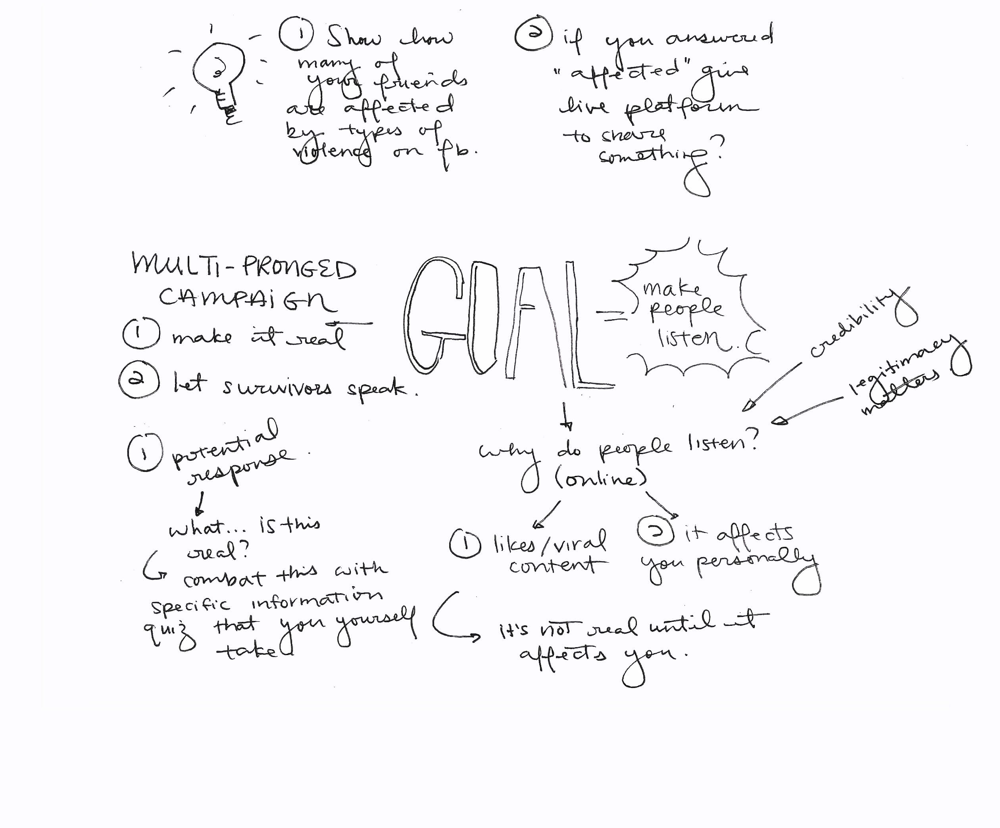

Chime
In the 24-hour Social Norms Hackathon, I worked with a team of 5 and won 1st place with Chime, a safe space that gives survivors of sexual violence a voice.
Role
UI, UX, and motion design
Project Type
Hackathon
Timeline
April 2017
Kudos
Sexual harrassment is both a misunderstood subject and a traumatizing experience to discuss.
We identified a gap.
To a general unaffected public, sexual harrassment is misunderstood topic. The general misunderstanding is that individuals put themselves in situations that warrant harrassment.
Because of this misunderstanding, the testimonies of victims are often belittled. On top of these experiences being difficult to share, the attack on the integrity of individuals who find courage to share makes others less inclined to speak out against the issue.
The cycle of misunderstanding and silence feed into each other.
We wanted to change that.
It's personal.
How might we show how widespread this issue is?
Stats usually communicate the impact of various issues, but they're often distant and impersonal.
Stats will mean more if they're about our friends, and people are more likely to believe their friends' stories. So we set out to show people how many of their personal friends were affected by sexual harrassment.

We conceptualized a survey on Facebook that would anonymously show how many of your friends are affected.
The key was
sensitivity. No one is asking to relive trauma. We wanted to be careful of how much we were asking from victims.
My team spent as much time as possible sensitizing the process, warning people what the contents would be, and being clear about the purpose of the survey.
With Sketch, I created the Facebook survey mockups. You can take a look at the Framer prototype here.
First, we created a banner on the Facebook newsfeed to show the purpose of the survey.


Understanding that this solution deals with an extremely sensitive subject, we embedded designs that would ease users into the topic and allow them to opt out at anytime.

This survey also aimed to inform people about different types of sexual violence. These question bubbles open into definitions.
Making sure that our users did not receive any information they did not want, we added predictive indicators showing what they were going to see next.

With these personal numbers, we hoped to
create empathetic and curious listeners. This will now lead users to our platform, Chime, where they can anonymously hear the survivor voices.
We then visualized the safe space that presented voices of solidarity sharing their experiences with sexual violence.
I created the Aftereffects prototype of the interface which uses balls of light to anonymously represent each victim's voice. Upon clicking on these pieces of light, listeners can then hear tweetlike snippets of each survivor's story.
This way, Chime creates a safe and anonymous space to change misconceptions about sexual harrassment and transform social norms.